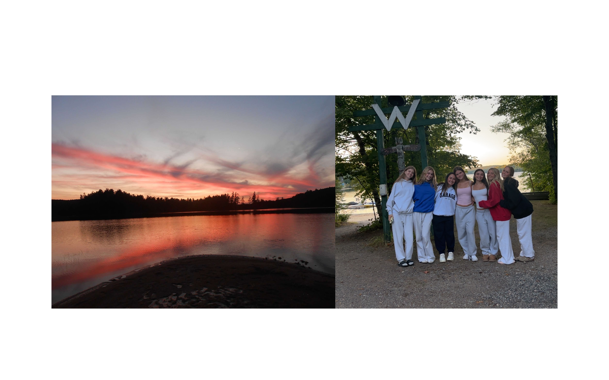

Hi! I'm Sophie Goldman a 16-year-old Computer Science Student at the Bishop Strachan School. I've always been interested in coding and the computer science world, when I was young I'd often code with my dad who works in the tech space. As I've gotten older I've taken more tech related classes, but this is the first time I've learned coding in a greater extent.
On this page, I hope you come to have a greater understanding of who I am as a person, and my interests outside of class and coding.

Camp has always been the most important and most influential part of my life. Getting to spend each summer surrounded by my favourite people in my favourite place is something I could never give up. This past summer, I was a CIT (counsilor in training), this meant that I would have the oppurtunity to spend time with younger campers at a variety of ages and step into a leadership role in their lives. This experience taught me so much and I try to bring some of these lessons into my every day life, like the importance of genuine kindness, honesty and support.